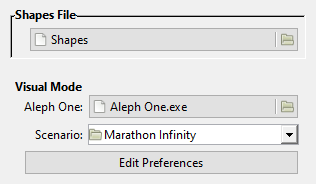

Marathon Mapmaking: Setup, Snafus, & Solutions
Starting Steps
This document is a guide to getting started creating content for Marathon Aleph One, an open-source engine based on Bungie’s groundbreaking first-person shooter trilogy (1994-1996) – not its upcoming extraction shooter (though I’m quite intrigued by the latter). This is primarily an abridgement of a much longer guide I have written that currently isn’t broken up into digestible chunks; here, I’ve included solely what beginning mapmakers need to know.
This abridgement contains links to modern editors for Aleph One, a guide to setting up Weland and a visual mode plugin (either Vasara or Visual Mode.lua) in Windows and MacOS (a Linux guide may be forthcoming), links to the first resources you should read and watch once you’ve set Weland up, Forge manual errata, descriptions of a few aspects of modern mapmaking that aren’t covered by the Forge tutorials, and links to more advanced resources.
Who are you and what qualifies you to write this?
I’m Aaron; I’m likely best-known in the community for co-directing Eternal, though I’ve also worked in some capacity (not always mapping-related) on current and forthcoming mods like Apotheosis X, Hellpak, Tempus Irae Redux, Where Monsters Are in Dreams, Marathon Chronicles…basically, I’ve been busy mapping for this engine off and on since about 1997, during which I’ve acquired all kinds of stupid arcane knowledge about it. Have you ever heard of ambient light delta? Neither had Aleph One’s developers until I pointed it out. I’m not saying that because I think it’s worth being proud of having acquired so much useless and pointless knowledge, but what I do have are a very particular set of skills, skills I have acquired over a very long career. Skills that make me… oh, sorry, that’s Taken. Anyway, I feel Aleph One content creation should have a lower barrier to entry, so here’s an attempt to create a reference for solutions to some of its frustrating problems.
If you wish to contact me, the best way is via Discord. You can ping me on the Marathon Discord server at @Aaron#6608, though it’s entirely possible others may be able to answer your questions before I see them, so I’d recommend this only if you notice errors/omissions in this document (or have suggestions for additions; I can credit you for all three). If you need help, it’s best to ask in #marathon-general, #forge, or #tech-support (#development is for engine/editor development). I’m also on the Pfhorums (as The Man) and Reddit (as u/aaronnotarobot), but I can’t promise to respond to messages on either quickly.
As mentioned, I have a much longer mapmaking page that goes into much greater depth. You may also be interested in my Marathon soundtracks page, which contains some technical information about remastering music and sounds that may be helpful to those working on sounds or music. A lot of my own creative work, much of which is Marathon-related, may be found on my discography and portfolio pages.
Table of Contents
- Author Info
- Table of Contents (you’re looking at it?)
- Acknowledgements
- Aleph One Content Editors
- Marathon 2/Infinity Format
- Marathon 1 Format
- Mapmaking Basics
- Weland Setup
- Configuring Weland’s Preferences
- Installing Visual Mode & Vasara (MacOS)
- Installing Visual Mode & Vasara (Windows)
- Configuring Weland!Aleph One
- Tutorials & Resources for Beginning Mapmakers
- Forge Manual Errata & Omissions
- Texturing Issues in Visual Mode.lua and Vasara
- Further Texturing Issues in Vasara
- Further Reading
- Advanced Tutorials & Resources
- Marathon Communities & Resources
- Endnote(s)
Acknowledgements
- Jason Karns and Davide Cannizzo on Stack Overflow for the CSS table of contents, which is beyond my relatively competent level of CSS ability.
- The numerous mapmakers I’ve learned from or been influenced by over the years. I couldn’t possibly hope to list them all, but James Hastings-Trew, CryoS, hypersleep, RyokoTK, windbreaker, Don-Martin Antell, Drictelt, Mike Trinder, Jason Harper, Chris Lund, Courtney Evans, Frank Rooke, Devon Belcher, Borzz, Rich Dierkes, Shebob, Jason Jones, Greg Kirkpatrick, Randy Reddig, Antonio de Llamas, and FM have to number among them.
- The numerous people who have helped maintain Aleph One over the years.
- Bungie, for obvious reasons.
Back to top · Table of contents
Aleph One Content Editors
Marathon 2/Infinity Format
Bungie’s two official editors were Forge (mapmaking) and Anvil (physics, shapes, sounds). I will not address how to run these in this guide, because they don’t run on any operating system past MacOS 9.2.2, and there are vastly better replacements for both programs that actually run on modern operating systems.
While you might expect Forge+ to be roughly equivalent to Forge, Weland is actually much closer to it, to the extent that roughly 90% of the Forge tutorials can be applied wholesale to Weland. I list all the important differences I’m aware of below, and they make up a relatively small portion of this document; for most users, setup will be by far the most complicated difference to navigate.
Forge+ runs in Unity rather than Aleph One, which has some interesting ramifications. Because Aleph One is a portal engine, it is not possible to “noclip” into negative space (outside the map bounds); the engine needs to render using valid X, Y, Z, and polygon data to decide what should be visible, so attempting to render a scene from outside the bounds of any polygon simply crashes the engine. Unity, not being a portal engine, is not bound by this limitation, so you can use Forge+ to view an entire map at once from negative space. On the other hand, Forge+ is completely confused by “5D space” (two or more polygons occupying the same X/Y/Z space) and simply draws all walls.
Unfortunately, Forge+’s feature set is nowhere near as robust as Weland’s. It’s perfectly adequate for texturing, but the lack of a hook to switch quickly back and forth between it and Weland makes it less practical than it would otherwise be. It’s still worth checking out, though, to get a better sense of the physical space various levels occupy.
Back to top · Table of contents
Marathon 1 Format
Marathon 1 content editing is barely supported on modern OSes, with one partial exception: You can extract M1 sound files’ contents by splitting them with Atque, but it won’t re-merge them into a format Aleph One reads as M1 sounds. The ‘Classic OS’ resources below require a Mac or emulator running System 7 through 9. Setting one up is beyond this document’s scope.
To make this content compatible with modern Aleph One, you must run it through MacBinary (I’ve never gotten this to work) or extract it from an emulator disk image with a program like HFV Explorer (the method I used for my remastered Marathon 1 and Trojan sounds).
Back to top · Table of contents
Mapmaking Basics
Weland Setup
Configuring Weland’s Preferences
- Setting up Weland can be confusing; this doesn’t aim to be an exhaustive list of the issues you may face in doing so. I can’t possibly hope to provide that here; you’ll find people who can help on the Discord.
- You’ll need either Gtk# or Mono, depending on your OS; the readme tells you which to get. (You’ll also need .NET on Windows, but all Windows 10 and 11 computers should already have this installed, and if you’re running an older version, you really should upgrade – running operating systems that are no longer being supported is a major security risk.) Installing the wrong one sometimes seems to make Weland not work, and they’re on the same webpage, so users can get one thinking they’ve gotten the other. Read carefully!
- After getting Weland to start, you’ll next want to set up visual mode to function from within Weland. Go to Edit > Preferences. You’ll want the Shapes and Visual Mode segments to resemble these settings:

- Shapes File: valid Marathon 2/Infinity-format shapes. Marathon 1 shapes probably won’t work, but I haven’t tested this. This affects what Weland uses in visual mode and the overhead texture view.
- Aleph One: the Aleph One app. EZ. My Windows examples use:
C:/Games/Marathon Infinity/Marathon Infinity.exe
For Macs, I use two examples:
Macintosh HD/Games/Marathon Infinity/Marathon Infinity.app
Macintosh HD/Games/Aleph One/Aleph One.app
The reason for this will become apparent below.
- Scenario: the folder you use within Aleph One to run the scenario you’re editing. This is usually the folder with Map, Shapes, Images, and Sounds, but Rubicon X is an annoying exception: it uses a script to put these in a Rubicon Data subfolder. Use the containing Rubicon X folder, not Rubicon Data, for Rubicon.
- Next, you’ll need to set up an editor for visual mode. Despite the name, Weland’s visual mode can use either Visual Mode.lua or Vasara, but whichever one you choose must be accessible to the scenario you wish to edit. I’m going to divide this into different sections for Linux/Windows and MacOS.
Back to top · Table of contents
Installing Visual Mode & Vasara (MacOS)
- Owing to how the Mac version of Aleph One is built, setting up Visual Mode on Macs may be confusing. Effectively, on both the Mac and Windows, there are two ways to get Aleph One versions of the Marathon trilogy (there are, of course, even more on Linux), but which one you get is vastly more consequential on MacOS:
- On the Mac, this distinction is really important, as it affects where Visual Mode.lua and/or Vasara should go:
- Visual Mode.lua: It’s best to put this in the user data folder. Which user data folder, though?
- Infinity all-in-one app:
~/Library/Application Support/Marathon Infinity/Visual Mode.lua
- Standalone Aleph One app:
~/Library/Application Support/AlephOne/Visual Mode.lua
- Aleph One only makes this distinction on Macs: on Windows and Linux, it places all user data in one folder.
- Note also that the Library folder is normally hidden in the Finder, so to place Visual Mode.lua in one of its subfolders, you may need to use ‘Go to Folder’. Weland should be able to see it with no problem, though.
- Vasara: There are a few options for this, which I’ve chosen to list in descending order of how much they irk me.
- Making a plugins folder in the same directory as an all-in-one app (e.g., Macintosh HD/Games/Marathon Infinity/Plugins/Vasara.zip) won’t work. You’d have to right-click or control-click the app, select ‘Show Package Contents’, then make a plugins folder within the app, e.g.:
Macintosh HD/Games/Marathon Infinity/Marathon Infinity.app/Plugins/Vasara.zip
- I really don’t care for this approach. While Mac apps are typically self-contained, this approach creates major downsides for scenario developers. Not all users even manage to get this method to work, and users probably shouldn’t be encouraged to mess with app packages when it’s not strictly necessary; they could easily break the apps if they don’t know what they’re doing.
- Another, less offensive solution for the all-in-one apps is the user data plugins folder. On a Mac, the all-in-one Infinity app would use:
~Library/Application Support/Marathon Infinity/Plugins/Vasara.zip
The stand-alone Aleph One app would use:
~Library/Application Support/AlephOne/Plugins/Vasara.zip
The Mac is also the only platform that separates the trilogy’s user data folders from Aleph One’s (another design choice I’m not fully on board with), hence why I’ve noted both locations for Macs.
- This method actually isn’t perfect either, since, as stated, the Library folder isn’t visible by default – you have to navigate to it with ‘Go to Folder’. I find this much less bothersome than asking users to mess with app packages, though.
- The third option, and perhaps the most painless in the long run, is to ditch the all-in-one apps entirely, grab the scenario data by itself, and run it with the standalone Aleph One app in the scenario directory – that way, you can keep Vasara inside your scenario directory, as Yrro intended. If you’re in the middle of playing the trilogy and don’t want to move your files over (itself a complicated process that is beyond the current scope of this guide), you can always keep a copy of the all-in-one apps to play the games, and just use the data and the stand-alone app for Vasara.
Back to top · Table of contents
Installing Visual Mode & Vasara (Windows)
- Visual Mode.lua is a solo Lua script, which is best placed in the user data folder. Thus, my Windows 10 path for it is:
C:/Users/Aaron/Documents/AlephOne/Visual Mode.lua
Replace Aaron with your username to find where to place yours. (Linux and older versions of Windows will have different paths – and if you’re running the latter, please get a new computer operating system: running an OS that’s no longer being updated is a major security risk that puts all your data in jeopardy.)
- Vasara is a plugin, so it belongs in the Plugins folder (if there isn’t one already, make one called ‘Plugins’). This can be the scenario plugins folder:
C:/Games/Marathon Infinity/Plugins/Vasara.zip
Or, if you’d like it to be accessible to all scenarios, the user data plugins folder, e.g.:
C:/Users/Aaron/Documents/AlephOne/Plugins/Vasara.zip
Which may be more convenient if, like me, you’re perverse enough to map for five scenarios at a time, but you’ll have to disable it outside Weland!Aleph One for any scenario for which you’re not already using a solo Lua script.
Back to top · Table of contents
Configuring Weland!Aleph One
- The next steps may be slightly confusing. Without exiting Weland’s preferences dialog, click the ‘Edit Preferences’ button. This should launch Aleph One using the scenario you’ve selected. This is entirely intended!
- Within Weland!Aleph One, click Settings. This creates a new preferences file (separate from the standard scenario preferences) that only affects the game’s behavior when it’s launched from Weland (e.g., launching Marathon Infinity from Weland creates a new ‘Marathon Infinity Preferences Editor’ file within your Aleph One preferences folder).
- For Visual Mode.lua: Go to Environment, check ‘Use Solo Script’ if it isn’t already, then select ‘Script File’ and find Visual Mode.lua in Aleph One’s user data folder (Aleph One usually navigates from this folder by default).
- For Vasara: This step depends slightly on your Aleph One version:
- Aleph One 1.6.2 or later: Select it under Plugins; no other plugins that use solo Lua should be active, and ‘Use Solo Script’ in the Environment settings should be unchecked. If Vasara doesn’t appear, double-check that you copied it to the right location.
- Aleph One 1.4 to 1.6.1: The same as above, except Plugins is a button on the Environment page. Also, you should really upgrade your Aleph One version.
- Aleph One 1.3.1 and earlier: Please get a new
computer Aleph One version. (No, seriously – launching Visual Mode from Weland requires at least Aleph One version 1.4.)
- In either case, now select ‘Accept’, quit out of Aleph One, and select ‘OK’ in the Weland dialog box. If you’ve done everything correctly, you should now be able to launch visual mode in much the same way it launched from within Forge. If not, reread the above, try to ensure everything is set up as shown here, and if you still can’t solve the issue, you may wish to ask for help at one of the above resources.
- I should perhaps note that several Windows users have reported only being able to get Weland to run correctly by using Gtk# 2.12.26 – a completely ancient release. No one has been able to produce a satisfactory hypothesis for why this is the case, but enough people have experienced it that it’s ceased to look coincidental. (For the record, I didn’t have to do this to get Weland to work on Windows; in fact, the setup process was quite painless for me.)
Back to top · Table of contents
Tutorials & Resources for Beginning Mapmakers
Although the first two tutorials listed below were made for Forge, Weland has an almost identical interface, and 95% of what you see here will apply just as well to Weland once you have Vasara or Visual Mode.lua set up. The Forge manual has several errata, which I’ve documented below the Weland setup guide. Essentially, you’ll use Weland for everything you’d do from Forge’s top-down view; you’ll use Visual Mode.lua or Vasara for almost everything you’d do in Forge’s visual mode (currently, neither has an ‘align heights’ feature); and you’ll use Atque for merging and splitting maps.
The modern replacement for Anvil is ShapeFusion; its feature set is very nearly identical to Anvil’s, although it does a few things differently. Nonetheless, the annotated Anvil help balloons will be essential, since they’re one of the few Anvil features not integrated into ShapeFusion. The default Infinity physics model is also essential because the “Standard” physics model distributed with Marathon Infinity is actually a Marathon 2 physics model (thanks, Bungie), so if you want to edit VacBob or SMG physics, you’ll have to grab the one from Simplici7y.
Back to top · Table of contents
Forge Manual Errata & Omissions
- Platforms: The ‘Locked Door’ flag is broken and doesn’t do anything.
- Lights:
- The ‘Stateless’ flag is broken and doesn’t do anything.
- The manual says ‘Δ Period’ is ‘the maximum random amount of time added to or subtracted from’ the value of Period. In fact, the game never subtracts Δ Period from Period; it only ever adds them together.
- The manual’s statement that ‘Δ Intensity’ ‘does for Intensity what Δ Period does for Period’ is technically correct (the best kind of correct!), but since its description of Δ Period is wrong, I’m listing it here for completeness’ sake.
- Environment Types: The manual’s description of ‘Rebellion’ is completely outdated; it is a correct description of ‘Rebellion (M1)’. The ‘Rebellion’ flag strips all players’ weapons and ammunition, and if their health is above 37 (full 1x shields would be 150), the game strips their health to 37. (Conversely, if their health is below 37, it does not restore it to 37. Also, note that all these values can be customized with MML). Additionally, if the ‘Extermination’ mission type is set on a Rebellion level, all monsters set as ‘Alien’ in the physics must, without exception, either be killed or (perhaps counterintuitively) have teleported out for the mission status to be set as ‘Complete’.
- Mission Types:
- ‘Rescue’ is broken. Use ‘Rescue (M1)’ if you want this behaviour. Additionally, the ‘Rescue (M1)’ mission affects whether the level completion state is set as ‘Failed’; it’s still up to mapmakers to set the ‘Finished’ or ‘Unfinished’ states in other cases. aperturegrillz’s speedrun of ‘Bob-B-Q’ shows us what can happen when a mapmaker neglects to set any mission types besides ‘Rescue (M1)’.
- ‘Extermination’ doesn’t require killing everything unless, as mentioned above, the ‘Rebellion’ flag is also set. Otherwise, the player gets a leeway of up to eight monsters marked as ‘Alien’ in the physics. The game doesn’t count monsters that are not marked as ‘Alien’, and it doesn’t matter whether they’re set as hostile to the player. (You can force players to kill all monsters of one or more specific types using MML.) Also, the game disregards monsters that have teleported out for the sake of extermination missions, likely to prevent players from being unable to complete a mission if too many teleport out.
- Sound Objects:
- ‘Is On Platform’ overrides the selected sound with the platform’s ambient sound.
- ‘Δ Volume’, ‘Δ Period’, ‘Δ Pitch’, and ‘Δ Direction’, like the similar light values above, are only ever added to, respectively, Volume, Period, Pitch, and Direction; they are never subtracted. Additionally, for these values (but, curiously, not for the similar light variables), the game will never select the maximum delta value. Thus, if you set both Period and Δ Period to 30, the game will select a value from 30 to 59, inclusive.
- While this isn’t truly an erratum, ‘Δ Direction’ deserves further mention for a questionable design choice that can create the misleading impression that, for a sound to play from a constant direction, Δ Direction should exactly match Direction: in fact, Δ Direction should be 0°. (If Direction and Δ Direction are both 135°, for example, the results will range from 135° to 269° (nice), inclusive.)
- Polygon Types:
- The manual’s description of the ‘Invisible Monster Trigger’ was probably the intended behaviour of the polygon type, but in practice, it is the same as the ‘Dual Monster Trigger’: it activates all monsters in a zone, not just teleporting ones.
- Only players can trigger Platform On/Off Triggers, but both players and monsters can trigger Light On/Off Triggers.
- Monsters can’t move over Teleporters and won’t cross them (this doesn’t apply to Automatic Exits).
- Although monsters usually can’t move in Monster & Item Impassable polygons, they can if the player is in the same polygon they are. Also, they have been known to disregard the polygon type occasionally and enter it, although I’m not at all sure what causes this; and of course, they can get pushed in.
- Monsters never drop items if they die on Item Impassable, Monster & Item Impassable, Platform, or Teleporter polygons, or on the edges of steps/ledges/cliffs.
Back to top · Table of contents
Texturing Issues in Visual Mode.lua and Vasara
A few problems occur when texturing in Aleph One that were not problems in Forge. These include:
- If you are using a version of Aleph One prior to 1.6:
- Upgrade, for the love of Pthia.
- When you exit visual mode (or type .save level), platforms that extend From Ceiling or From Both should be in the same position they start the level in, or you’ll get texture misalignments. Aleph One 1.6 largely fixes this and a related platform alignment bug that occurred even in the original engine. (Slight misalignments – we’re talking a pixel or two – may still occur if you close the editor while such a platform is moving, but it seems to be entirely fine if the platform is at rest. If such platforms must move continually, one solution is to tie them to some specific action on the map, such as a platform trigger on a player spawn point, and then X+click to set the player start point elsewhere when you go to texture. If you don’t set it on the player spawn point, you can also teleport around the map to avoid walking on it. Another solution is reportedly to type .save level rather than to close visual mode. Whichever solution you use, you’ll need to remember to do it each time you open visual mode.)
- When you exit visual mode, tags should be in the state they’re meant to start the level in. Thus, if you tabbed a tag switch that starts the level inactive so you could open some doors, reset the tag to inactive. Take special care with wires and chip insertion switches – messing them up can render levels uncompletable. This is one of several reasons I’d recommend avoiding tags where possible – this is just the tip of the iceberg (you don’t need to worry about the other reasons until later).
- Walking on a Must Be Explored polygon (or even looking at it if Exploration (M1) is set) resets it to Normal. Be sure to reset these after texturing (or just don’t set them until you’ve finished texturing).
- In old versions of Aleph One (prior to 1.6, if memory serves), frame interpolation could cause textures to jitter if you placed them without paving first. Some players also reported that placing textures without first paving could cause crashes (I never experienced this, and it was also supposedly fixed in the same Aleph One update). However, paving occasionally crashes Weland (I haven’t isolated the cause, but it seems to be an index mismatch), so it’s ideal to save, pave, then go into visual mode.
- By necessity, texturing always loads all textures, so you may sometimes want to avoid using hi-res textures while texturing. You’ll probably want to run through the map with the hi-res textures on once you’ve finished your initial pass, though; when you do so, I recommend keeping as few other programs open as possible.
- Visual Mode.lua did not handle wires correctly until version 3.0.2, released on 2024-01-19. If you’re having trouble getting them to work correctly, upgrade to the latest version or use Vasara.
- Forge’s “align heights in visual mode” feature does not exist in any modern editor; it’s necessary to exit visual mode, change the polygon’s heights, then go back to visual mode to texture it (or use Lua to do that, if you know it; one of several reasons I added overlays to Vasara 2.0b was to facilitate this). If you’re on the obsessive-compulsive spectrum like me, you probably hated Forge’s implementation of this feature because it didn’t actually align heights correctly (see my discussion under “ target="_blank">planned features” in Vasara’s readme for specifics). However, I plan to add a less sloppy implementation to Vasara 2.0b once I’m satisfied with my UI design. (I’m not a UI specialist and have long held that UI is far too important to be left up to programmers that aren’t UI specialists.)
Further Texturing Issues in Vasara
- Vasara 1.0.x gets weird with more than 56 lights. If you have both ‘Apply Light’ and ‘Apply Texture’ selected with a light ≥ 56, the HUD disappears; reduce the light value to something < 56 and hit the action key to restore it. If one is selected, but not the other, the HUD functions normally.
- Vasara 2.0b (my WIP update) fixes the Lua error spam. It currently does not display previews of lights greater than 55 correctly, but it lists lights from 0 to 97 in its options screen.
- If you leave visual mode (or type .save level) while a polygon is flashing and highlighted on the map for the player to teleport to, this will be set as a Major Ouch polygon and the floor’s transfer mode will change to Static. So… don’t do that. This occurs because Vasara highlights the polygon on the map by changing it temporarily to a Major Ouch polygon (and physically changes its appearance in the game world to create the static effect on its floor).
- Fixing this would require not highlighting the polygon on the map, and after trying that for a bit, I found it more annoying than the current behavior. I’m working on a possible compromise.
Back to top · Table of contents
Further Reading
Advanced Tutorials & Resources
I can’t vouch for the accuracy of all of this info (except, I hope, my own page), and you definitely shouldn’t worry about most of this stuff until later – you need to familiarize yourself with the fundamentals before moving onto more advanced techniques. (If you don’t know how to play a paradiddle, you aren’t ready to cover a Neil Peart solo.) Hastur’s Workshop is listed first here because it’s the first advanced tutorial you should read – while not all of it is still relevant, you can still find helpful nuggets even in the seemingly irrelevant bits (e.g., viewing distances are no longer limited to 30 World Units, but the tips on that page can still be helpful for making spaces seem larger than they are, which is especially helpful since there are really only about 63 usable World Units in each direction).
Hastur’s Workshop: citadel.lhowon.org/litterbox/Forge/hastursworkshop (Infinity’s creators’ advanced tips)
My complete mapmaking page: aaronfreed.github.io/mapmaking.html
Additional Forge tutorials: citadel.lhowon.org/litterbox/Forge/index.html
Anvil references: citadel.lhowon.org/litterbox/Anvil/Index.html
File format info: gist.github.com/marrub--/98af41f36e15a277088b220a6a9f4244 (note: parts of this now appear to be outdated, but parts may still be helpful)
Back to top · Table of contents
- The Marathon trilogy (all-in-one releases): alephone.lhowon.org
- Aleph One app: alephone.lhowon.org/download.html
- Data files for the trilogy and ten major Aleph One scenarios⁽¹⁾: alephone.lhowon.org/scenarios.html
- Aleph One GitHub: github.com/Aleph-One-Marathon
- Simplici7y: simplici7y.com, with a temporary mirror at lochnits.com/s7 (archive containing most of the newest content for the engine)
- Fileball: fileball.whpress.com or rising-studios.com/Marathon/fileball (archive of content from the 2000s)
- Bungie.org Archives: archives.bungie.org (the oldest extant archive of third-party Marathon content; much of this requires an emulator or a Mac running the classic OS to run)
- Discord: discord.gg/NmE66Mhq2a
- The Pfhorums: pfhorums.com
- Marathon Story Forums: forums.bungie.org/story
- Reddit: reddit.com/r/marathon
- Marathon’s Story Page: marathon.bungie.org/story (if you have story questions, for the love of Yrro, go here first – 90% of them can be answered with a quick search here)
- Marathon Lore Archive: marathon.karnemir.com (searchable archive of terminals from the trilogy and ARG material from Bungie’s upcoming game; meant to be more mobile-friendly)
- Marathon Scenarios: lochnits.com/marathon/scenarios (contains links, maps, terminals, & level flowcharts for major & many lesser-known fan scenarios)
- Marathon Spoiler Guide: marathon.bungie.org/spoiler
- Dr John Sumner’s Spoiler Guides: 1drv.ms/u/s!AuD0MykSsmaRmx_NxpRgTRM69vgn?e=AplygX
- Marathon Vidmasters’ Page: marathon.bungie.org/vidmaster
- Vidmaster films on YouTube: youtube.com/@MarathonVidmaster, youtube.com/@VidmasterChallenge (full disclosure: I run the first channel)
- Fracai’s maps: fracai.github.io/marathon-svg (detailed maps of all three games)
- Level maps on Lhowon.org: lhowon.org/level
- CyberAcme: marathonwiki.com (while this is still getting started, it at least has actual standards for its articles. Please don’t link to Pfhorpedia; not only is it a Fandom wiki, but it’s so full of misinformation as to be entirely unsalvageable.)
- Wikipedia: en.wikipedia.org/wiki/Marathon_Trilogy
- TV Tropes: tvtropes.org/pmwiki/pmwiki.php/VideoGame/Marathon (Bungie games),
tvtropes.org/pmwiki/pmwiki.php/VideoGame/MarathonExpandedUniverse (fan scenarios)
- Marathon Soundtracks: themarathonmusic.com/downloads.html, aaronfreed.github.io/soundtracks.html
Back to top · Table of contents
Endnote(s)
| # |
Note |
| 1 |
Trojan, EVIL, Tempus Irae, RED, Eternal X, Rubicon X, Phoenix, Mararthon Yuge, Apotheosis X, and Istoria. I’d unconditionally recommend Tempus Irae, Eternal X, Phoenix, and Apotheosis X (note: I’ve contributed in some capacity to current or forthcoming releases of all of these: remastered music for Phoenix; sounds and scripting for Apotheosis X; too many things to list for Eternal X and Tempus Irae Redux). Rubicon X and Istoria round out my top six with the caveats ‘don’t play Rubicon X above Normal’ and ‘the Flame IADD fight can heck right off’. If you’re attuned to Yuge’s irreverent humour, it’ll reward you with fantastic gameplay and a remarkable demonstration of procedural level design. Trojan is great for those who wish Marathon 1 had been longer (even if you don’t play it, check out the OST, which slaps. Also, I remastered the music and sounds for the standalone edition, which unfortunately doesn’t work with current versions of Aleph One). RED’s execution is occasionally sloppy, and it’s probably too difficult, but it has some fantastic ideas and is remarkable for being almost entirely the work of a single person – who was a teenager at the time, to boot. EVIL’s strengths include professional-quality sprites; fantastic sounds, monsters, and weapons; and sometimes brilliant (if frustratingly inconsistent) level design. |
Back to top · Table of contents